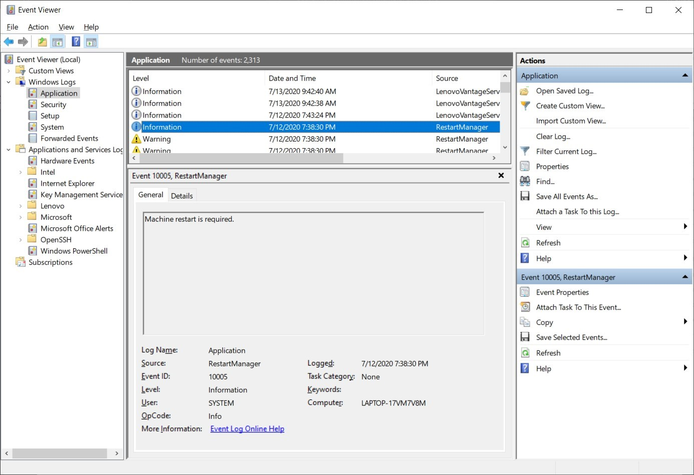
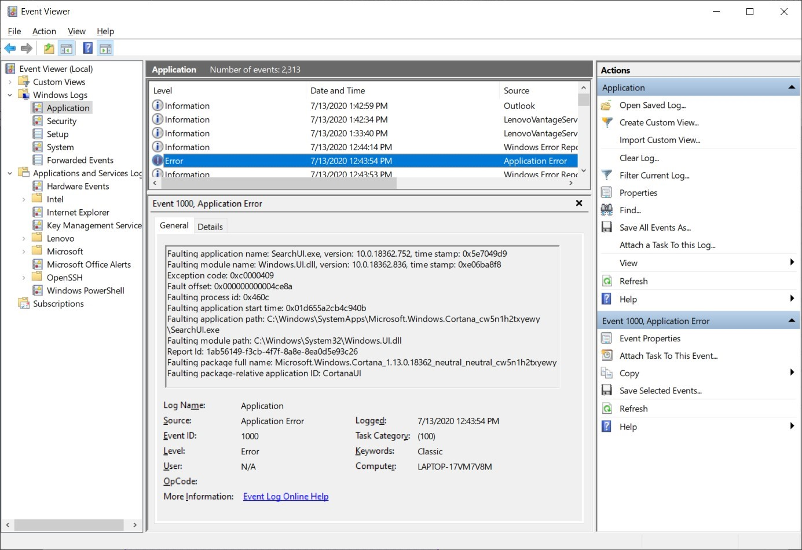

Introduction
9beca326-b493-4b0e-b3dc-d7dfb77df3c9
Welcome to the Network and Application Related Incident Compromise Indicators Practice Lab. In this module, you will be provided with the instructions and devices needed to develop your hands-on skills.
dc640c20-9434-45ea-b7c2-6d4d6a196bfc
Learning Outcomes
In this module, you will complete the following exercises:
- Exercise 1 - Network-Related
- Exercise 2 - Application-Related
After completing this module, you will have further knowledge of:
- Bandwidth Consumption
- Beaconing
- Irregular Peer-To-Peer Communication
- A Rogue Device on the Network
- Scan/Sweep
- Unusual Traffic Spikes
- Common Protocol Over a Non-Standard Port
- Anomalous Activity
- Introduction of New Accounts
- Unexpected Outputs
- Unexpected Outbound Communication
- Service Interruption
- Application Logs
Exam Objectives
The following exam objectives are covered in this lab:
- 4.3 Given an incident, analyze potential indicators of compromise
Note: Our main
focus is to cover the practical, hands-on aspects of the exam
objectives. We recommend referring to course material or a search engine
to research theoretical topics in more detail.
Lab Duration
It will take approximately 1 hour to complete this lab.
89816a20-56f2-42c5-bfa0-46f11f2986ba
Help and Support
For more information on using Practice Labs, please see our Help and Support page. You can also raise a technical support ticket from this page.
Click Next to view the Lab topology used in this module.
d2c53300-f951-45a9-9aa4-3d4ecae69e11
Lab Topology
This lab contains supporting materials for CySA+.

Click Next to proceed to the first exercise.
<
Home |
README >
CompTIA Cybersecurity Analyst (CySA+) Practice Labs
Exercise 1 - Network-Related
A network comprises several systems, applications, and
network devices. When a network device or server gets compromised, the
attacker may attempt to disrupt the other servers and applications.
There will be several indicators of compromise that may be visible.
In this exercise, you will learn about several indicators of compromise on a network.
Learning Outcomes
After completing this exercise, you will have further knowledge of:
- Bandwidth Consumption
- Beaconing
- Irregular Peer-To-Peer Communication
- A Rogue Device on the Network
- Scan/Sweep
- Unusual Traffic Spikes
- Common Protocol Over a Non-Standard Port
Your Devices
This exercise contains supporting materials for CySA+.

Bandwidth Consumption
Each network consumes a certain amount of bandwidth
when connected to the Internet. Certain services will continue to
consume bandwidth, and as such you must create benchmarks on what normal
consumption looks like. For example, if there is a Webserver that uses a
certain amount of bandwidth, you can look at the usage over the last
few months and create benchmarks.
In a case such as denial-of-service (DoS) and distributed denial-of-service (DDoS)
attacks, the bandwidth consumption will shoot up. The Webserver will
have a large number of inbound connections that will also consume a good
deal of bandwidth. You can configure alerts that should raise the alarm
if there is bandwidth consumption above the set benchmark.
There are several commercial and free tools available
that can be used to monitor bandwidth consumption. Some of the free
tools are:
- BitMeter OS
- Freemeter Bandwidth Monitor
- BandwidthD
- PRTG Bandwidth Monitor
- SolarWinds Real-Time NetFlow Analyzer
Beaconing
When a system becomes compromised, it is usually
controlled by a command and control center, which requires the
compromised system to check-in after a set time. In some cases, after
the compromised system connects to the command and control center, the
attacker may trigger a few commands to perform several mischievous
activities, like stealing the data or triggering a denial-of-service
attack.
When the compromised system is connecting to the
command and control center at a given interval, it is known as
beaconing. There is a communication that takes place between the
compromised system and the command and control center.
The interval of connectivity between the compromised
system and command and control center is usually after a set time.
However, an attacker may want to perform a quick task, such as steal the
data or information before getting detected. Therefore, the interval is
not set, but it is at the will of the attacker.
Several tools and applications can identify the beaconing process. Some of the key tools are:
- Edge firewalls
- Intrusion detection systems
- Web proxies
- SIEM
As a recommended practice to stop beaconing, you
should create an activity baseline on the network. This can help you
identify unusual activities. For example, the compromised system may be
connecting with the command and control center in the middle of the
night, which should raise alerts.
You should also continuously monitor the traffic on
the network. If a system is sending out traffic at regular intervals to
an external host, it should be inspected. It is also important to note
that in most cases, the beaconing traffic mimics the normal traffic.
Therefore, it is critical to monitor the traffic and identify unusual
patterns even if it is normal traffic.
Irregular Peer-to-Peer Communication
There can be a possibility that there is a
peer-to-peer communication taking place within the network. It could be
due to two users sharing files using peer-to-peer communication. Another
possibility could be that there is a botnet that exists within the
network that is causing the peer-to-peer communication.
In a normal botnet, there is a command and control
center that exists on the Internet somewhere. This command and control
center controls all the bots within a botnet. However, the communication
within an internal system can be blocked by a firewall, and therefore,
the normal botnet may not be able to communicate with the compromised
internal system.
The peer-to-peer botnets are a relatively new concept
in the botnet domain. In the peer-to-peer botnets, a system that is
Internet-facing from a network is set as a command and control center,
which in turn controls the internal compromised systems.
Once again, monitoring network traffic is a good
option to track peer-to-peer communication. Along with this, you can
also use either IPS or IDS to monitor suspicious activities, such as
illegal file-sharing or communication with the command and control
center.
A Rogue Device on the Network
Several times, users tend to bring their own devices
and plug them on to the network. In several cases, the users may not
have ill intentions, but while in other cases, the users may be wanting
to perform malicious activity, like setting up a rogue access point to
capture the communication.
There can be several devices that can be considered as
a rogue on the network if the network administrator does not authorize
them. Some of the rogue devices that you may happen to find on the
network are:
- Rogue switches
- Mobile hacking gear
- Wireless key loggers
- Wi-Fi and Bluetooth hacking gear
- Rogue wireless access points
Not all the rogue devices can be located and
prevented on the network with a single solution. For example, to ensure
that the rogue switches cannot be connected to the network, you need to
hard code the trunks and disable the Dynamic Trunking Protocol (DTP) on the switch ports. This must be done on all switches that are connected to the network.
When referring to the rogue wireless access points, you should use the Wireless Intrusion Prevention System (WIPS), which can track any rogue wireless access points on the network.
Scan/Sweep
A user on the network may run an unauthorized scan of
the network to verify the live systems and to check which all ports are
open on these systems. If an unauthorized scan sweep occurs, it could
indicate that someone might be preparing for a penetration test, even
though you do not have any knowledge of it. This could be an
unauthorized penetration test or hack that might be on its way. For
example, someone might just run the ping or ICMP sweeps to verify all
the live systems on the network. In another case, someone might just run
a port scan to verify which all ports are open on the live systems.
Another example is that someone might run a vulnerability scan on live
systems to locate vulnerabilities that have not been closed. These
vulnerabilities can be a target for exploitation.
You need to continuously monitor network traffic, and
also enable logging through SIEM, which can help you detect such
activities through logs. You can also implement IDS to detect any such
traffic on the network.
Unusual Traffic Spikes
Unusual traffic spikes can arise in network traffic.
There can be legitimate reasons, such as updates being downloaded,
backups being performed, antivirus being updated. There could be several
legitimate issues. However, you need to know the pattern of these
legitimate spikes in traffic, which can be done by benchmarking or
creating the network traffic baselining.
Then, there are unusual and illegitimate traffic
spikes. These could cause deviations from the standard benchmarks and
baselines. Therefore, you need to continuously review the network
traffic and verify whether it is legitimate or illegitimate. A
denial-of-service attack can cause illegitimate traffic spikes.
Common Protocol Over a Non-Standard Port
There can be a possibility that an attacker may be
running a malware or any malicious application using a common protocol,
such as HTTP or HTTPS. However, most such applications would not run on the standard port, which could be port 80 for HTTP and port 443 for HTTPS.
The attacker may run the application using a non-standard port, let’s say port 8080 or 8181 for HTTP.
Depending on the type of application or malware that is running, it is
quite a high possibility that there will be a non-standard port that
will be used.
Therefore, when monitoring traffic, you should
monitor and review it carefully and locate any non-standard port being
used. If there is something that is not in your knowledge, it is worth a
check.
dc2a295a-ab17-4b52-8e1c-80389d10a470
<
Home |
README >
CompTIA Cybersecurity Analyst (CySA+) Practice Labs
Exercise 2 - Application-Related
In some cases, symptoms are not present on the
network or in the activities of the host operating system, but they are
present in the behavior displayed by a compromised application. In this
exercise, you will learn about the application-related indicators of
compromise.
Learning Outcomes
After completing this module, you will have further knowledge of:
- Anomalous Activity
- Introduction of New Accounts
- Unexpected Outputs
- Unexpected Outbound Communication
- Service Interruption
- Application Logs
Your Devices
This exercise contains supporting materials for CySA+.

Anomalous Activity
There can be different forms of anomalous activities
in a system. It could be that the applications stop working, such as an
antivirus. It could also be that some critical data is deleted without
your knowledge. If there are certain cases like that you do not expect,
you can suspect anomalous activities.
One of the best methods to track anomalous activities
is to baseline your system. If there is new malware being installed or
added to your system, you can check your system configuration against
the baseline and figure out the anomalous activities.
Introduction of New Accounts
There can be different places where the user accounts
can exist. It could be a directory server, such as a domain controller,
or it could be the local system. Other than these, there can be a
database for an application that contains the user accounts. For
example, you choose to keep your application related accounts in an SQL Server database.
As a standard practice, you should be reviewing these
accounts regularly. In many cases, the attacker creates a new user
account to gain entry into the system. You can consider this as a
backdoor entry into the system. It could also be a possibility that the
malware created the user account with administrative access in the
system.
Unexpected Outputs
Each application is designed to work and generate
output in a certain way. The output has a certain format that is
consistent. However, if you get output that is not as expected, for
example, corrupt output or dialog boxes with strange messages, you can
expect the system to be infected with malware.
In such a scenario, you can suspect that the malware
has altered the application that is either displaying the dialog boxes
with strange messages or generating corrupt output. You should
immediately take the system off the network and perform a thorough
scanning of the system. It would be advisable to use at least two
antivirus or antimalware scanners. If the application continues to
behave in the same way, you should format the system and re-install it.
Unexpected Outbound Communication
As a security professional, you should be
consistently monitoring the network, specifically the traffic that is
outbound. During monitoring, if you see a large amount of outbound
traffic, you should immediately inspect the traffic. There is a high
possibility that malware or a malicious entity is sending out the
traffic to their systems. This traffic could include confidential data
from your organization.
In such a scenario, you should inspect the firewall
rules and block the outbound traffic to the system. You should also
locate the internal system that is sending the traffic and isolate it
from the network. Then, you should perform a thorough check on the
system, and there is a high possibility that you will find malware
within the system.
Service Interruption
If multiple services are failing or behaving
abnormally on your system, you should inspect the system without a
second thought. It is a good idea to check the event logs and figure out
the reason that is causing the applications to fail.
As a precautionary measure, it is good to scan the system with an updated antimalware.
Application Logs
The Application log in windows contains the
application-specific entries. Any event that takes place with an
application is logged in the Application log. For example, you have
updated an application with a newer version. The update requires the
system to be restarted for changes to take effect. In such a scenario,
the event regarding the restart is logged in the Application log.
Figure 2.1: Showing the Microsoft Event Viewer.
If there are abnormal shutdowns or failures of an application, such events are also logged in the Application log.
Figure 2.2: Exhibit of the Event Viewer: Showing an error in the Application log in the Event Viewer
When the applications are not behaving as expected,
the first check you should perform is in the Application log. Here, you
are likely to gain the real cause of the error.
dc2a295a-ab17-4b52-8e1c-80389d10a470
86b3caf2-2504-4e20-a81b-2fcb2368c8d2
Keep all devices that you have powered on in their current state and proceed to the review section.
Review
Well done, you have completed the Network and Application Related Incident Compromise Indicators Practice Lab.
2abaca70-efa1-4fe5-94fb-ad1777bfc242
bd3c9fbf-a264-4954-81b2-c8f814b9b296
ef0a4d0f-e50e-4293-82a5-4b45a50e6fd7
e76cb9c8-c5d3-4cb1-bc55-d455afcb8095
eb282bc3-02ce-490d-abe6-cae65ff204d4
7ad6da04-7867-4768-b91a-959b33abad42
aaaaaaaa-1111-1111-1111-193f35a24fe3
Summary
You completed the following exercises:
- Exercise 1 - Network-Related
- Exercise 2 - Application-Related
You should now have further knowledge of:
- Bandwidth Consumption
- Beaconing
- Irregular Peer-To-Peer Communication
- A Rogue Device on the Network
- Scan/Sweep
- Unusual Traffic Spikes
- Common Protocol Over a Non-Standard Port
- Anomalous Activity
- Introduction of New Accounts
- Unexpected Outputs
- Unexpected Outbound Communication
- Service Interruption
- Application Logs
Feedback
067744a4-4299-4662-b5be-04dbb636a007
Shutdown all virtual machines used in this lab. Alternatively, you can log out of the lab platform.